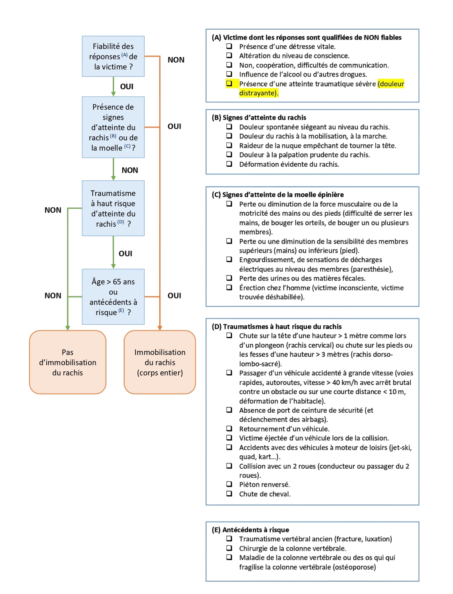

ARBRE DE PRISE DE DÉCISION

À RETENIR
La décision d’immobiliser le rachis repose sur l’évaluation de la victime et sur la recherche des différents critères présentés dans l’arbre décisionnel.
En présence d’un critère justifiant une immobilisation, procéder à l’immobilisation du rachis selon les techniques adaptées à la situation.
En l’absence de critère d’immobilisation, l’immobilisation systématique du rachis n’est pas indiquée.